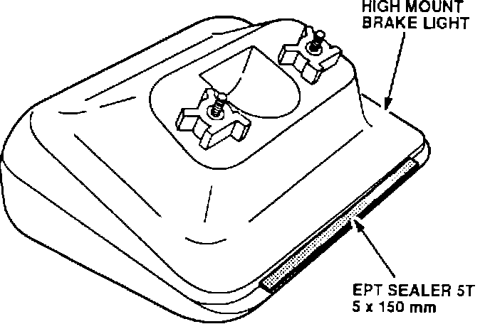

Rattle From the Rear Shelf
HIGH MOUNT BRAKE LIGHTSymptom:
Rattle from the rear shelf.
Probable Cause:
Clearance between the rear shelf and the brake light housing.
Corrective Action:
Apply 5 mm EPT Sealer to the bottom of the light housing.
1. From inside the trunk, remove the bulb socket and the two mounting nuts from the high mount brake light.
2. Remove the brake light from the rear shelf and turn it upside down.
3. Cut a 5 x 150 mm piece of 5 mm EPT 5T Sealer.

4. Center and apply the EPT to the bottom of the light housing, along the rear edge, as shown.
5. Reinstall the door sill molding and the quarter trim panel
WARRANTY INFORMATION:
Operation number: 714050
Flat rate time: 0.3 hours
Failed P/N: 34270-SP0-A01
Defect code: 043
Contention code: B07